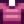

Käferfleisch
| Käferfleisch | |
| Ein saftiges Stück Käferfleisch. | |
| Information | |
| Quelle | |
| Verkaufspreis | |
Käferfleisch ist ein Monsterbeute Gegenstand, welcher von Insekten fallen gelassen wird, nachdem sie getötet wurden. Wenn der Spieler eine Waffe mit der Käferkiller Verzauberung besitzt können auch Panzerkäfer und gefährliche Panzerkäfer Käferfleisch als Beute fallen lassen.
Fischteiche, die Goldmakrelen, Lengdorsche oder Hechte enthalten, können 20 Käferfleisch produzieren, wenn die Anzahl mindestens 9 erreicht hat.
Als Geschenk
| Reaktionen der Dorfbewohner
| |
|---|---|
| Hasst es | |
Herstellung
Beachte, dass die Übungsangel und Bambusstange keinerlei Köder nutzen können. Eine Fiberglasangel oder Iridiumangel wird benötigt.
| Bild | Name | Beschreibung | Zutaten | Rezeptquelle |
|---|---|---|---|---|
| Köder (5) | Lässt Fische eher anbeißen. Muss zuerst an einer Angel angebracht werden. | |||
| Wilder Köder (5) | Ein einzigartiges Rezept von Linus, welches dir eine Chance gibt, zwei Fische gleichzeitig zu fangen. | |||
| Robuster Ring | Halbiert die Dauer von negativen Statuseffekten. | |||
| Käfersteak | Die letzte Zuflucht des hungrigen Höhlentauchers. | |||
| Zauberköder (5) | Ermöglicht es, Fische zu jeder Jahreszeit, zu jeder Zeit und bei jedem Wetter zu fangen, unabhängig davon, in welche Art von Wasser Du es wirfst. |
Bündel
Käferfleisch wird für keine Bündel benötigt.
Schneiderei
Käferfleisch kann in der Spule der Nähmaschine verwendet werden, um ein  Rosa gestreiftes Hemd herzustellen. Für die Färberei zählt Käferfleisch als dunkelpink und kann im violetten Farbtopf verwendet werden.
Aufträge
- 10 Käferfleisch kann von verschiedenen Fischen in Fischteichaufträgen angefordert werden.
- Willy benötigt 100 Käferfleisch für den Spezialauftrag "Saftige Käfer gesucht!". Als Belohnung erhält der Spieler
 3.000 G und das Rezept für den Qualitäts-Bobber.
3.000 G und das Rezept für den Qualitäts-Bobber.
Geschichte
- 1.0: Eingeführt.
- 1.4: Wird als Rezeptzutat für Robuster Ring verwendet. Kann in der Schneiderei genutzt werden. Kann in Fischteichaufträgen verlangt werden. Kann in Fischteichen produziert werden.
- 1.5: Im Spezialauftrag "Saftige Käfer gesucht!" verlangt. Als Zutat in den Rezepten Käfersteak und Zauberköder genutzt.